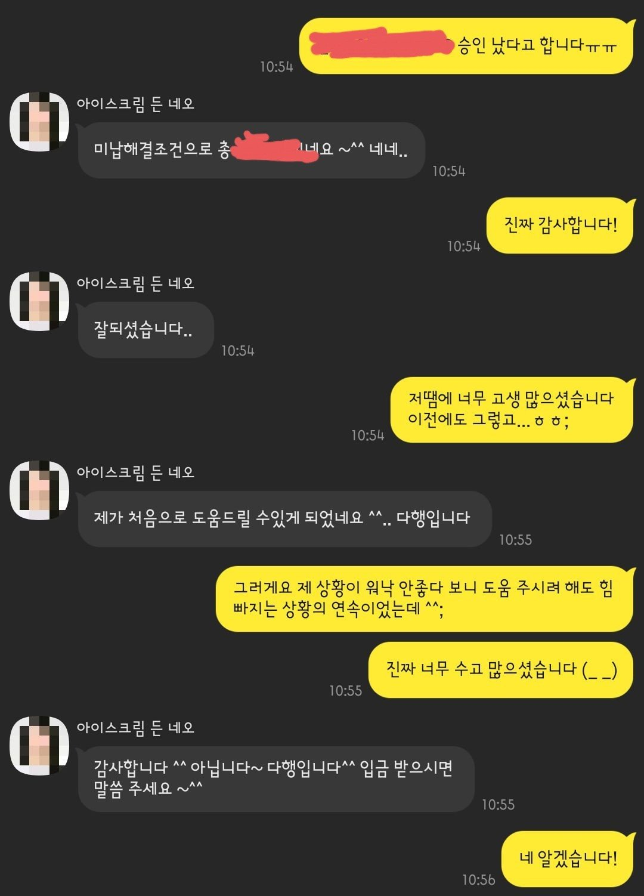

[개인회생자대출] 강민정 상담사님 감사합니다!
- 4대보험가입 有
- 만 9년 이상 재직
- 월 소득 실 수령 550만
- 개인회생 인가결정 5일 경과
- 33회 중 2회 납부, 1회분 미납 상태
최근 연체 이력까지 있었던 터라 절대 안될 줄 알았는데..강민정 상담사님께서 꼼꼼히 알아봐 주셔서 결국 대출 성공했네요!
회생 월 변제금이 290만원을 넘어가다 보니 더욱 쉽지 않은 상황이라 솔직히 큰 기대 안했습니다만,
정말 될 줄은 꿈에도 몰랐네요..ㅠㅠ
회생 미납분 납부 조건으로 해서 미납도 정리하고 개인적으로 급했던 것도 얼추 정리해서 정말 홀가분해졌습니다!
여러모로 조건이 좋지 않아 가능성이 높지 않아 보였는데도 끝까지 포기 않고 알아봐주신 강민정 상담사님 정말 감사합니다.
앞으로 꾸준히 관리 잘 해서 대환 대출도 알아봐야겠네요~!!
